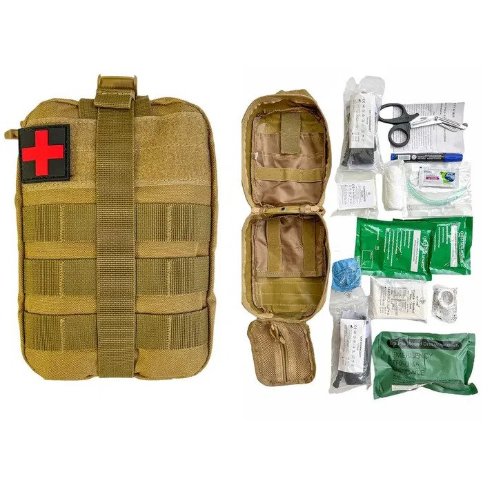
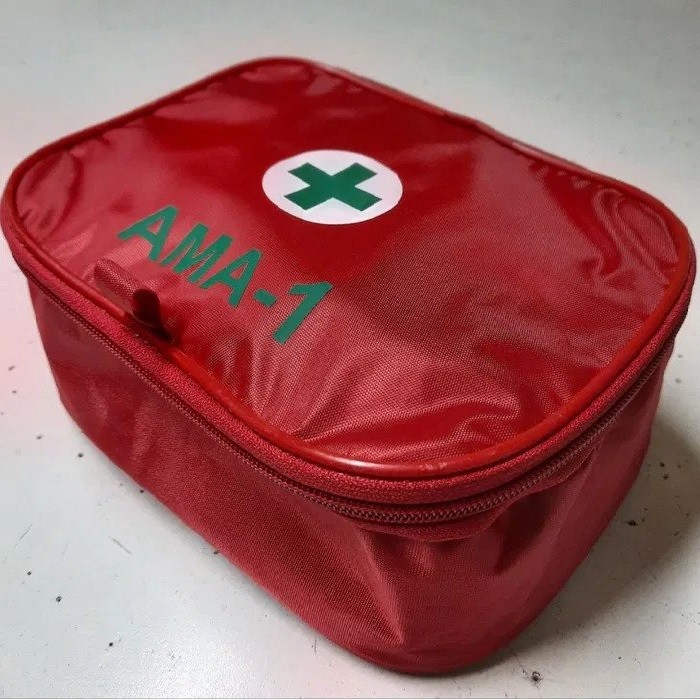
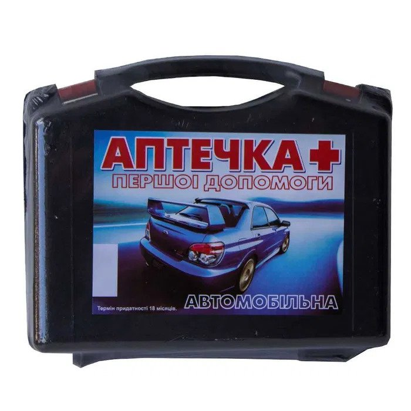

Аптечка для ЗСУ, варіант 1
1. Бандаж Израильского типа, 1 шт. - предназначен для оказания медицинской помощи при ранениях, для перевязывания ран и для обеспечения эффективного давления на источник кровотечения.
2. Компрессионная стерильная повязка 8см х 10см, 1 шт. – стерильная повязка, которая служит для наложения на рану с целью остановки кровотечения и защиты раны от проникновения инфекции.
3. Химическая кровоостанавливающая марлевая повязка для тампонады, 1 шт. – предназначена для тампонады огнестрельных, колотых, рваных ран, способствует эффективной остановке кровотечения за счет создания давления в ране.
4.Повязка окклюзионная для открытых ран грудной клетки, 2 шт. - окклюзивная повязка используется для входных/выходных ранений при пневмотораксах.
5. Лейкопластырь 5м х 2,5см, 1 шт. - применяют для фиксации повязки при ранах и ожогах.
6. Жгут кровоостанавливающий CAT (Combat Application Tourniquet), 2 шт.
7.Перчатки нитриловые нестерильные (размер L или XL), 1 пара – для защиты рук при оказании медицинской помощи.
8.Термоодеяло 160см х 210см, 1 шт. - используют для защиты пострадавшего от переохлаждения, от воздействия внешней среды и переноса тяжелых предметов.
9. Ножницы (атравматические), 1 шт. - для разрыва бинта, лейкопластыря, одежды, поясов безопасности и т.д.
10. Воздуховод назофарингальный, 1 шт. – для временной интубации трахеи.
11. Аптечка, 1 шт.
12.Маркер, 1 шт. – для нанесения информации.
13 .Карточка пострадавшего бойца (установленного образца), 1 шт.
Ціна за одиницю: 2550 ₴

Аптечка для водіїв АМА-1
Автомобільна аптечка АМА-1 укомплектована згідно з вимогою ДСТУ 3961-2000 (Зміна 2, ДЕРЖАВНИЙ СТАНДАРТ УКРАЇНИ).
Як показує практика, правила експлуатації автомобілів посилюються і дорожня поліція вимагає наявність аптечки саме згідно цього ДСТУ.
Призначена для укомплектування легкових і вантажних автомобілів, тракторів.
Футляр - водонепроникний сумковий нейлон.
АВТОМОБІЛЬНА АПТЕЧКА ПЕРШОЇ ДОПОМОГИ
НАБІР №1
1. Джгут для зупинки кровотечі - 1 од.
2. Бинт еластичний 8х1 - 1 од.
3. Бинт стерильний 5х10 см - 2 од.
4. Бинт стерильний 7х14 см - 1 од.
5. Бинт нестерильний 7х14 см - 1 од.
6. Бинт нестерильний 5х5 см - 1 од
7. Серветки з хлоргексидином, № 2 - 1 од.
8. Серветки кровоспинні з фурагіном, № 2 - 1 од.
9. Стерильна Серветка двошарова 45х29 - 1 од.
10. Пакет перев'язувальний стерильний - 1 од.
11. Ножиці - 1 од.
Інструкція про користування засобами автомобільної аптечки
Футляр для аптечки

Аптечка для водіїв AP-NEW Євростандарт
Автомобільна аптечка АМА-1 укомплектована згідно з вимогою ДСТУ 3961-2000 (Зміна 2, ДЕРЖАВНИЙ СТАНДАРТ УКРАЇНИ).
Як показує практика, правила експлуатації автомобілів посилюються і дорожня поліція вимагає наявність аптечки саме згідно цього ДСТУ.
Призначена для укомплектування легкових і вантажних автомобілів, тракторів.
Футляр - водонепроникний сумковий нейлон.
АВТОМОБІЛЬНА АПТЕЧКА ПЕРШОЇ ДОПОМОГИ
НАБІР №2
І. Засоби накладання пов'язаність зв'язок при травмах
1. Косинка медична перев'язна (50х50) - 1 од.
2. Гелева пов'язаність язка або противоопіковий набір - 1 од.
3. Рукавички медичні № 7,8 з поліетилену - 1 пара
4. Плівка (клапан) для проведення штучної вентиляції легенів - 1 од.
5. Шпильки англійські - 2 од.
6. Термопокривало - 1 од.
7. Пінцет - 1 од.
Інструкція про користування засобами автомобільної аптечки
Футляр для аптечки